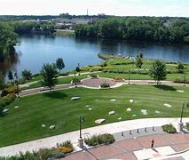
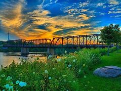

Phoenix Park

Located downtown right by the Pablo Center at the Confluence, Phoenix park is a
wonderful place to go for a stroll. Phoenix park hosts many events including
concert series, classes, as well as the Eau Claire Farmers Market in the
warmer months. There are many bike trails that connect through the park and
across the river. Some other cool features of the park are the many
sculptures scattered around the park, the to-scale planet walk that passes
through the park, and the Rainbow Light Phoenix Park Bridge.
More History - wikipedia.com

Average Rating: